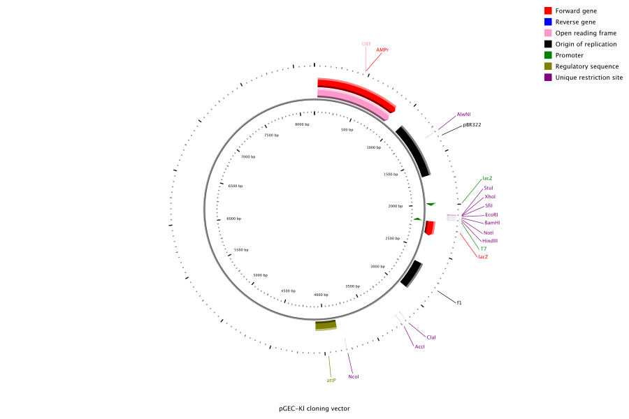

Tab-Delimited Input
The CGView application can read feature information from a tab-delimited file consisting of the following lines:
-
The # character followed by the name of the sequence. Optional.
-
The % character followed by the length of the sequence. Required.
-
The ! character followed by tab-separated names of the columns in your data file. Required.
-
The tab-separated feature data in the same order as the named columns. Required.
The following column names and values are required:
-
strand - whether the feature is on the forward or reverse strand.
-
slot - an integer between 1 and 6 indicating which of the concentric feature rings should hold the feature.
-
start - an integer between 1 and the length of the sequence.
-
stop - an integer between 1 and the length of the sequence. The stop value should be greater than or equal to the start value regardless of the strand, unless the feature crosses the sequence start/end boundary.
-
type - text indicating the type of feature. The following types are recognized: origin_of_replication, promoter, terminator, regulatory_sequence, unique_restriction_site, restriction_site, open_reading_frame, gene, predicted_gene, sequence_similarity, score, score_II, primer, and misc. The feature type determines how the feature is colored, and whether it is drawn as an arrow or an arc.
The following column names and values are optional:
-
opacity - a real number between 0 and 1 indicating the opacity of the feature, with 1 being completely opaque. The default value is 1.
-
thickness - a real number between 0 and 1 indicating what proportion of the slot thickness is occupied by the feature, with 1 being all the thickness. The default value is 1.
-
radius - a real number between 0 and 1 indicating where in the slot the feature should be placed, with 1 being at the edge of the slot furthest from the center of the backbone circle. This value only has an effect when the thickness attribute is set to a value less than 1. Default value is 0.
-
label - a text label for the feature. Shorter labels are better, because they are more likely to fit on the canvas.
-
mouseover - text to appear when the mouse pointer is placed over the feature label.
-
hyperlink - a URL to access when the feature label is clicked.
If you include optional columns in your data file, any missing values under the optional columns should be marked using a dash (-) character. Multiple tabs can be used to separate values. However, the order of the values must match the order of the column names.
Example input files are available at here.
This is the map generated by example_1.tab (note that the -R T option would typically be used with cgview.jar to remove labels for a map of this size):

This is the map generated by example_2.tab:

This is the map generated by example_3.tab:

Citing CGView:
|
|